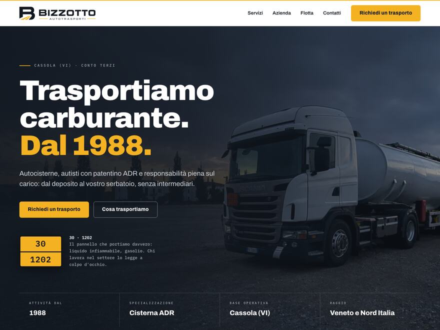
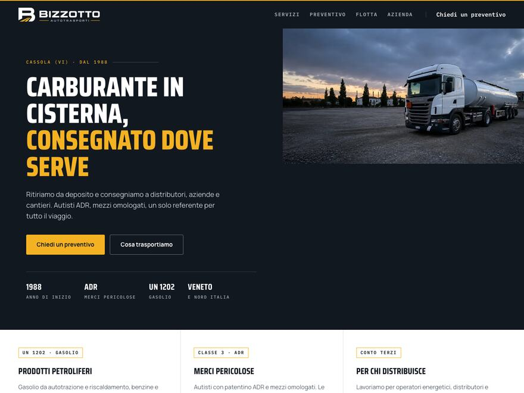
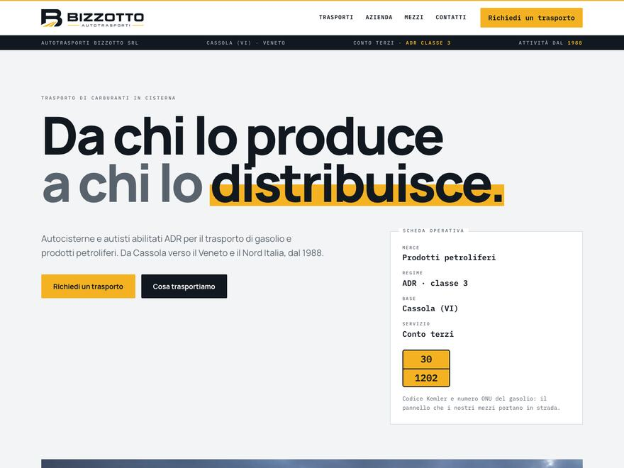
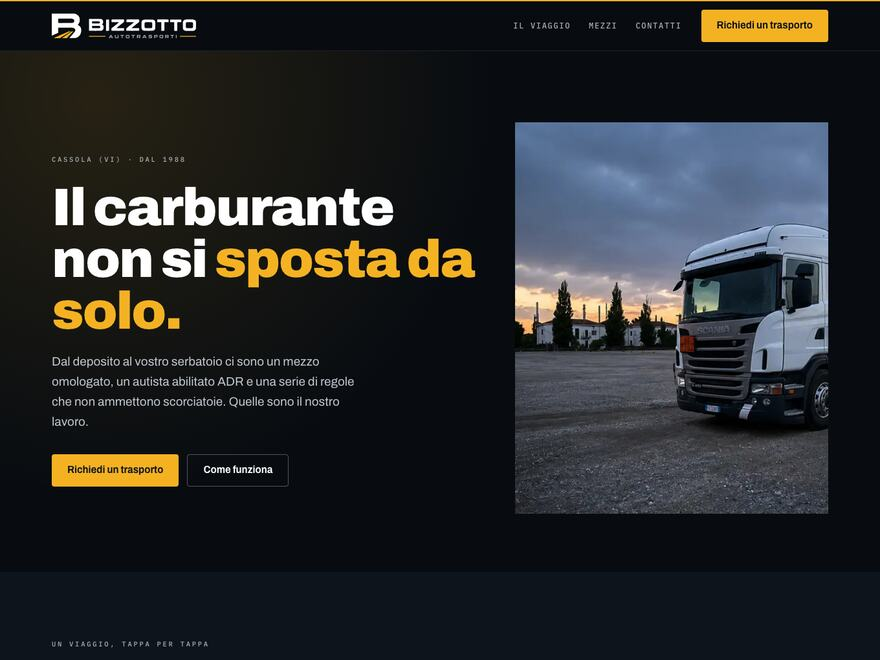
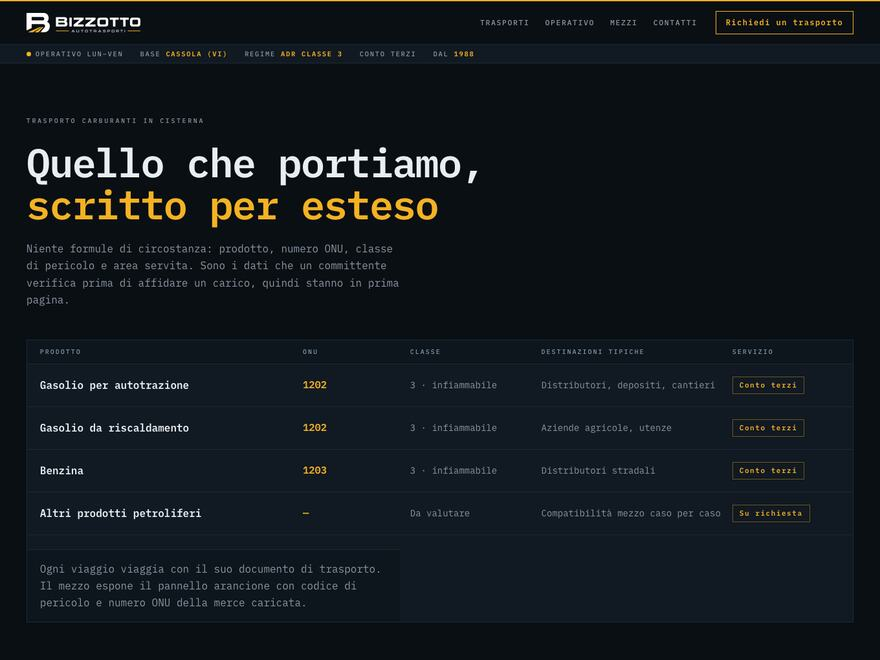
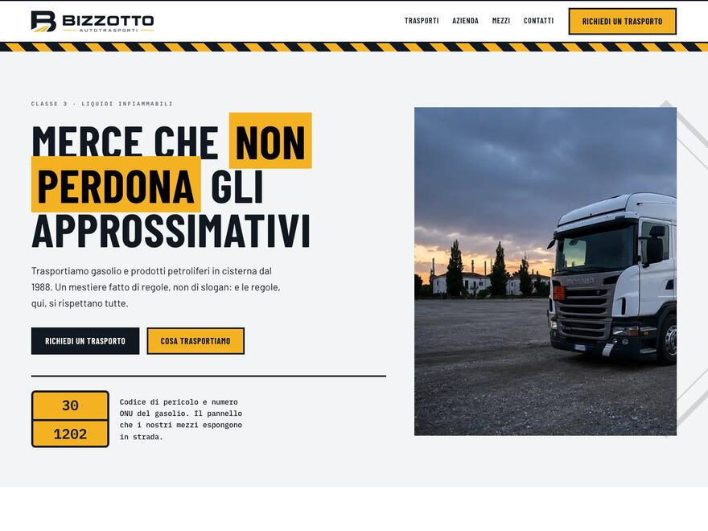
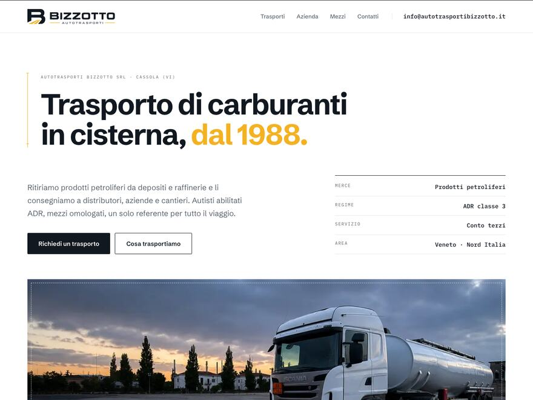
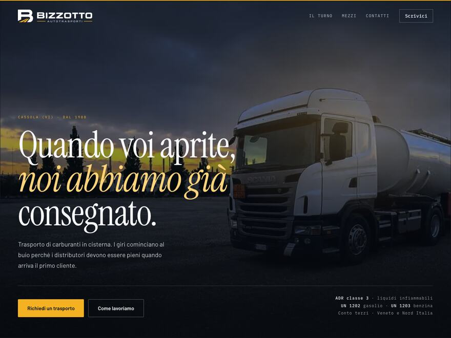

Classica
A · Pannello
Una cosa grande per schermata. La fotografia occupa tutta l'apertura, il titolo ci sta sopra.

- Forte se avete una gran foto d'apertura
- Preventivo in fondo
Stesso contenuto e stessa palette di marca: cambiano struttura, tipografia e temperatura. Le prime tre sono impostazioni classiche, le altre cinque spingono di più. Ora sono complete: marchio nuovo in testata e fotografie al posto dei riquadri a retino. Le immagini sono ritoccate e vanno sostituite con scatti veri prima di pubblicare.
Una cosa grande per schermata. La fotografia occupa tutta l'apertura, il titolo ci sta sopra.

Schermata divisa, foto verticale a destra. Il modulo di richiesta arriva a metà pagina.

Impaginato come un documento di trasporto: scheda operativa e tabella dei prodotti.

Il viaggio raccontato tappa per tappa: una linea ambra si riempie mentre si scorre, come un carico che avanza.

Tutto in carattere da macchina, come un pannello operativo. Prodotti, numeri ONU e classi in tabella già in apertura.

Linguaggio della segnaletica di pericolo: nastri diagonali, riquadri spessi, il rombo di classe 3 in filigrana.

Molto spazio, griglia rigorosa, figure quotate come in un disegno tecnico. L'ambra compare pochissimo.

Fondo nero, titolo in carattere elegante, luce ambra: il turno che comincia prima dell'alba. Poche parole, molta atmosfera.

| Volete più richieste di preventivo | B — il modulo è alto in pagina |
| Volete distinguervi e avete una bella foto | H, altrimenti D |
| I vostri committenti sono tecnici e frettolosi | E — i dati sono in prima pagina |
| Volete qualcosa che duri dieci anni | G — è la più sobria |
| Volete farvi notare in zona | F — nessuno in provincia comunica così |
| Le fotografie tarderanno | C o E — reggono senza immagini |